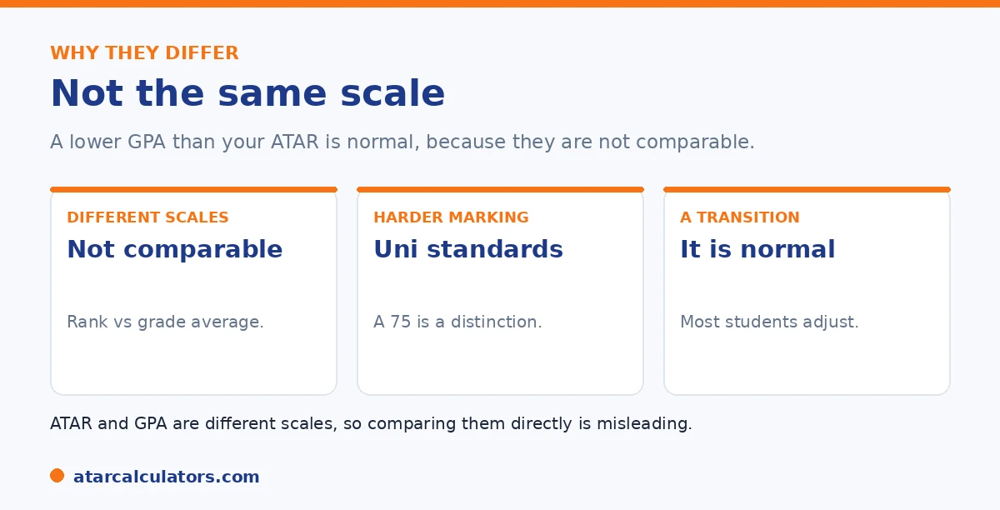

Here is the short version. If your GPA seems lower than your ATAR, the main reason is that the two are not comparable. Your ATAR is a rank and your GPA is a grade average, on different scales, so they were never meant to line up. On top of that, university marking is more demanding, and adjusting to it takes time. So a GPA that looks lower than your ATAR is usually normal, not a sign of failure.
It is unsettling to feel your university results are not matching your ATAR. But in most cases, you are comparing two things that cannot be compared.
Below is why this happens, and why it is normal. For context, use our ATAR to GPA converter.
Key takeaways
- ATAR and GPA are not comparable scales.
- One is a rank; the other a grade average.
- So they were never meant to line up.
- University marking is more demanding.
- Adjusting to it takes time.
- A lower-looking GPA is usually normal.
They are not comparable
The main reason is the simplest. Your ATAR is a rank, on a scale up to 99.95. Your GPA is a grade average, on a scale like 7.0 or 4.0. They are different kinds of number, so putting them side by side is misleading.

So an ATAR of 95 and a GPA of, say, 5.5 are not really comparable. The numbers look different because they measure different things, not because you have done worse.
University marking is demanding
There is a second, real factor. University marking is genuinely demanding. A mark in the seventies is a strong result, and top marks are deliberately hard to reach. So your raw marks may sit lower than the high percentages you saw at school.
This is by design, not a reflection of failure. A Distinction average is an excellent outcome. See our guide on how university grading changes.
The shift in what marks mean catches almost everyone. So it is worth stating plainly. At school, marks in the 90s are common for strong students. And a 95 feels like the target. At university, the marking scale is compressed at the top. A High Distinction usually starts around 80 or 85, and marks above 90 are deliberately rare, reserved for genuinely exceptional work. That means a student who routinely scored in the 90s at school might now sit in the high 70s or low 80s, not because they have become worse. But because the same quality of work is marked against a tougher standard. A credit-to-distinction average. That can look modest next to a 95 ATAR, is in fact a solid university result. The mistake is to read your university marks with school expectations and conclude you are underperforming. A better habit is to learn your own faculty's grade bands early. So you know what a Distinction actually needs, and to judge your marks against that scale rather than the percentages you were used to in Year 12. The numbers are lower by design. The achievement they represent is not.
Want context on the two systems?
Try the ATAR to GPA converter →The transition takes time
Finally, the move to university takes adjustment. New study skills, independent learning, and unfamiliar assessment all take time to master. Many students see their results dip early, then recover as they adapt.
So an early GPA that looks low may simply reflect the transition, not your ceiling. It often improves as you settle in. See our guide on whether a high ATAR predicts a high GPA.
Keeping perspective
So if your GPA looks lower than your ATAR, take a breath. You are mostly comparing incomparable numbers, on a more demanding scale, during a real transition. None of that means you are doing badly.
Judge your GPA on its own terms, against your goals and your course, not against your ATAR. See our guide on ATAR vs GPA.
Is a lower first-year GPA normal?
Yes. A lower GPA in first year is common, as you adjust to independent study, harder content, and university-style marking with no cross-subject scaling. Many students dip at first and then climb as they find their feet.
So a rocky first semester is not a verdict. It is a normal part of the transition, and because your GPA is an average, strong later results pull it up over time.
How to recover a low first-year GPA
Recovering is very doable. Because your GPA is an average, consistent strong results from here lift it, especially as later units accumulate. Focus on building good habits, using feedback and academic support, and prioritising high-credit units.
So treat a low first-year GPA as a starting point, not a ceiling. Many students recover fully, and an improving trend is itself something honours programs and employers notice. See how to improve your GPA.
Common questions
Why is my GPA lower than my ATAR suggested?
Mainly because the two are not comparable. Your ATAR is a rank and your GPA is a grade average, on different scales, so they were never meant to line up. University marking is also more demanding, and the transition takes time.
Why are my university marks lower than at school?
Because university marking is more demanding by design. A mark in the seventies is a strong result, and top marks are hard to reach. So raw marks often sit lower than the high percentages common at school.
Should I worry about a lower GPA than my ATAR?
Usually not. You are comparing incomparable numbers, on a more demanding scale, during a real transition. Judge your GPA on its own terms, against your goals and course, rather than against your ATAR.
Will my GPA improve after first year?
Often, yes. Many students see their results dip early, then recover as they adapt to university study skills, independent learning, and new assessment. An early GPA frequently improves as you settle in.
Can I compare my ATAR and GPA fairly?
Not really. They are different measures on different scales, a rank versus a grade average, so a direct comparison is misleading. The numbers look different because they measure different things, not because you did worse.
Understand the two systems
Explore how school and university grading compare. Indicative only.
Open the ATAR to GPA converter →Related guides
This guide is general information for students, not formal academic advice. ATAR and GPA measure different things on different scales, so there is no official conversion between them. Any figures here are approximate. For overseas applications, ask the specific institution for its needed conversion, or use a credential evaluation service. Grade scales also vary by university, so confirm with your own. The ATAR authority for your state is your admissions centre, such as UAC. Reviewed by the ATARCalculators Editorial Team.